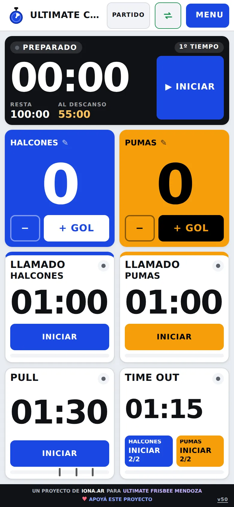
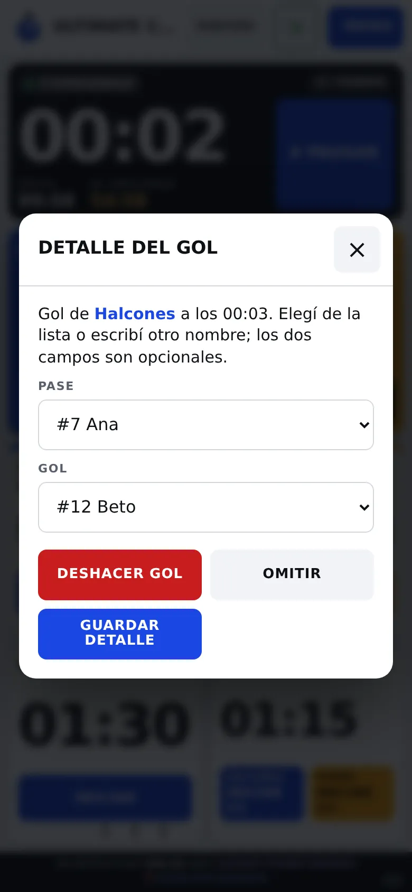
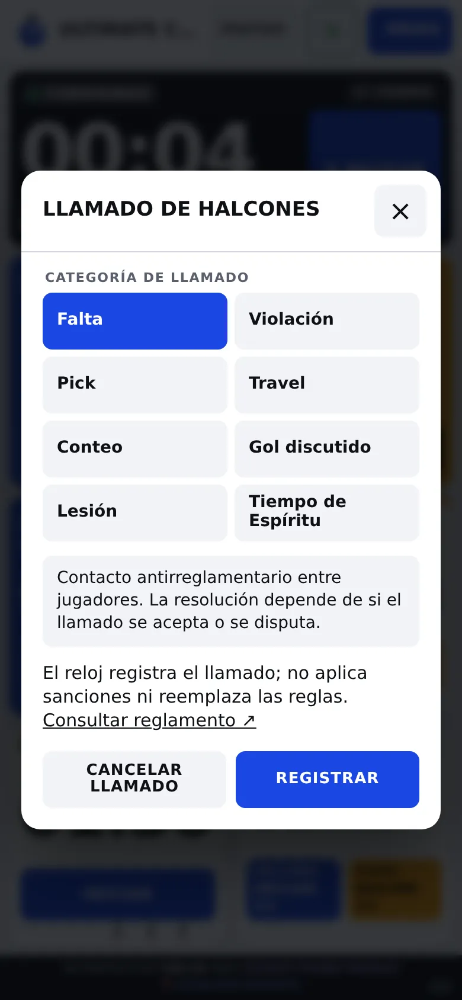
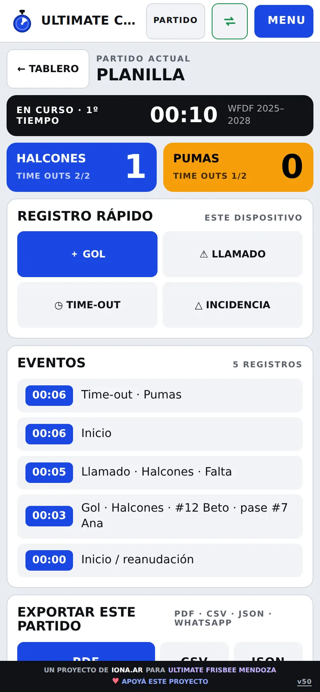
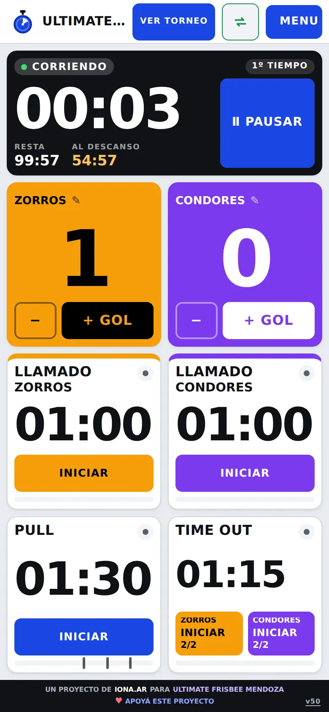
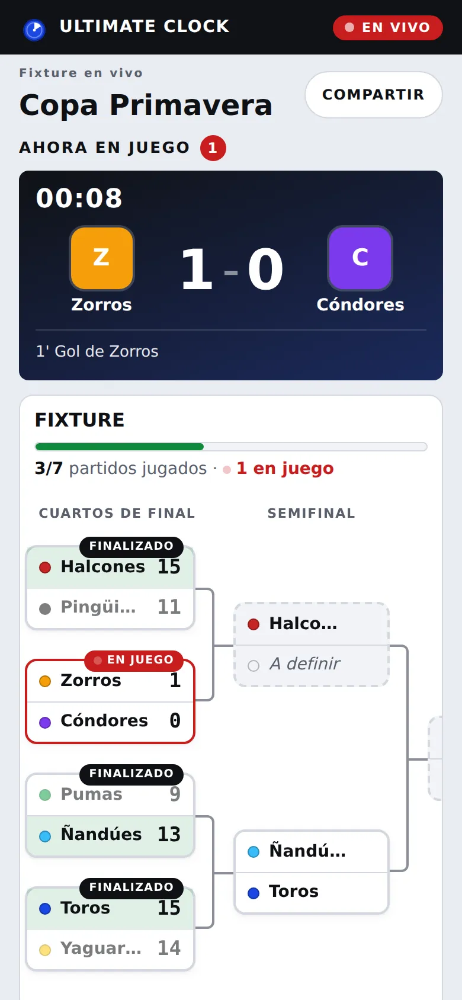

⏱
Relojes que no te traicionan
El reloj total se puede pausar y reanudar. Pull, llamado, time out y medio tiempo corren hasta cero, sin botón de pausa que te confunda. Si se suspende la pestaña, recupera el tiempo transcurrido.
Reloj, goles, llamados, time outs y planilla en una sola pantalla. Lo usás desde el teléfono, la tableta o la pantalla de la cancha, sin cuenta y sin instalar nada.
Tocá un + Gol para registrarlo.
La app sigue la secuencia real del partido. Cada paso tiene su reloj y sus controles, y no hace falta pensar qué viene después.
WFDF, USA Ultimate o tu propio reglamento. Tiempos, time outs y pull listos.
Reloj total corriendo, con goles y llamados registrados a medida que pasan.
Cinco alarmas agudas y un aviso visual cuando termina. El descanso corre solo.
Se renueva el cupo de time outs de cada equipo para la segunda parte.
Planilla lista para imprimir, pasar a planilla de cálculo o respaldar.
Las herramientas que usa una mesa de tiempo, en una sola app. Probá los llamados: cada categoría explica qué registra.
El reloj total se puede pausar y reanudar. Pull, llamado, time out y medio tiempo corren hasta cero, sin botón de pausa que te confunda. Si se suspende la pestaña, recupera el tiempo transcurrido.
Cinco alarmas agudas al terminar cada tiempo, con prueba de sonido para ajustar el volumen antes de empezar.
Ocho categorías para registrar el hecho y el equipo que lo llamó. Tocá una para ver qué significa.
Cada gol guarda quién lo anotó y quién dio el pase. Si te equivocás, lo corregís sin borrar el historial.
Cada equipo ve cuántos le quedan, por mitad. Los colores y los cupos se leen de un vistazo, aun desde lejos.
Goles, llamados y time outs ordenados en una planilla, con historial de partidos guardados.
PDF para imprimir o compartir, CSV para planillas de cálculo y JSON como respaldo completo.
Se abre sin señal después de la primera carga. Se instala en el teléfono como una app más.
Capturas de la app tal como se ve en el teléfono y en la tableta. Deslizá para ver más.





Cargá los equipos y sus jugadores una vez. Después, cada partido se arma solo: llaves, fechas y tabla de posiciones.
Eliminación con cuadro de llaves, o todos contra todos con fechas y tabla cruzada.
Bajás la plantilla, cargás equipos y jugadores en Excel, y la importás a la app.
Estadísticas por jugador y por equipo, calculadas con los goles que registraste en cada partido.
Compartí un link para que el público siga el marcador, los eventos y los goleadores desde su teléfono.

Arrancá con un perfil oficial o creá el tuyo. Los valores de los perfiles son puntos de partida: confirmalos con la organización de tu torneo.
Perfil de la federación mundial, con time out de 75 segundos.
Perfil de la temporada 2026–2027, con time out de 70 segundos.
Nombre, tiempo total, mitades, pull, llamado, time out y cupo de time outs, a tu medida.
Ultimate Clock registra los llamados; no aplica sanciones ni resuelve disputas. Eso sigue en manos de los jugadores y del árbitro.
El partido completo funciona sin cuenta y sin pagar. Lo que necesita una cuenta, como torneos compartidos y varios dispositivos, es el Modo Pro.
En modo gratis no hay cuentas ni servidor. Cada partido queda en el navegador de tu dispositivo, y lo exportás cuando quieras.
Abrís la app y empezás.
Nada sale del dispositivo salvo que lo compartas.
Abrila en el navegador, probá el sonido y arrancá. No hace falta instalar nada.